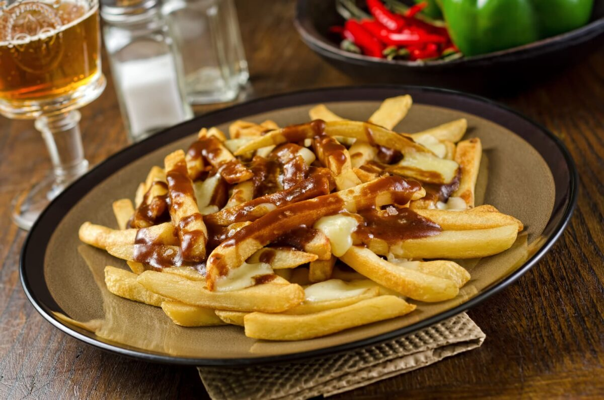

For breakfast, we'll be making a delicious meal
with pancakes, eggs, bacon, and Canadian sausage,
and when you click the animation button, it will
show the steps. The ingredients needed are eggs,
vanilla extract, butter, flour, sugar, salt, and
baking soda.
Step 1: Mix all your dry ingredients together.
Step 2 is to mix all your
wet ingredients together.
Step 3 is to add your wet
ingredient to the dry ingredient and mix it together.
Step 4 is to put butter in a medium-heated pan.
Step 5
is to put your mix in the pan, and flip the pancake when
it's bubbling at the top. Use a spatula to check if it's
good at the bottom.
Next, crack the egg in a medium-heated
pan and cook it for 2 or 2 1/2 minutes.
Lastly Bacon and Canadian
Step 1: Put your bacon and breakfast sausages in a medium-heated pan, depending on how
You like your bacon crispy cook it for 5-6 minutes
or if you want your bacon soft cook it for 4-5 minutes,
and cook your breakfast sausages roughly for 5 minutes.

Lunch
For lunch, we'll be making a well-known meal around
Canada called poutine, and it is an amazing meal if
you want to eat an amazing food. When you click the
animation button, it will be teaching you different
steps and ingredients that are critical for lunch.
The ingredients needed are potatoes, butter, chicken
and beef stock cubes, flour, hot water, and onion or garlic pepper.
Fries
Step 1:Soak them cold in water for at least an hour or overnight.
Step 2:Rinse them twice with cold water and pat the completely dry.
Step 3:Heat oil to 300 degrees. Fry them in about 6 batches for 5-6 minutes.
Don’t overcrowd them by placing too many in at a time, they won’t be
as crispy. Place on a paper towel
Step 4:Increase heat to 400 degrees.
Fry in batches until golden brown, about 5 minutes place it on a towel.
Gravy
Step 1:Dissolve stock cubes or powder in boiling water.
Step 2:Melt butter in a saucepan and mix in flour.
Step 3:Pour in the stock while whisking, and cook for 1.5 minutes until thickened.
Dinner
For Dinner, we'll be making a meal called a Maple Salmon since most
Canadian people like seafood it will be great for them. The ingredient
needed is Maple syrup: Of course, you'll need maple syrup! Soy sauce: Salty soy sauce perfectly balances the sweetness of the maple syrup.
Garlic. garlic salt and black pepper.
A pound of salmon.
Step 1:Stir maple syrup, soy sauce, garlic, garlic salt, and pepper together in a small bowl.
Step 2:Cut salmon into 4 equal-sized fillets; place in a shallow glass baking dish and coat
with maple syrup mixture. Cover the dish and marinate salmon in the refrigerator for 30 minutes,
turning once halfway.
Step 3:Preheat the oven to 400 degrees F (200 degrees C).